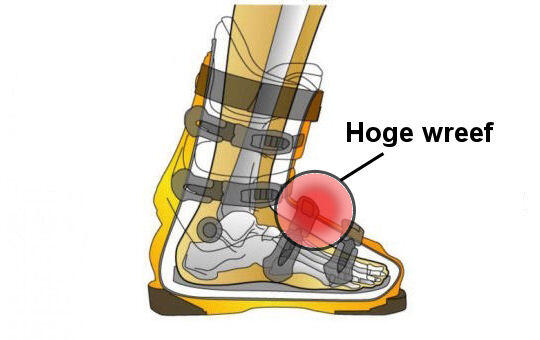

Hoge wreef
Probleem: Hoge wreef knelt af in de skischoen en veroorzaakt tintelende tenen en een branderig gevoel bij de bal van de voet.
Oplossing: Soms kan een bestaande schoen worden aangepast. Verreweg de beste oplossing is een schoen op maat laten maken.
Lees hier meer over de problemen van een hoge wreef in skischoenen.